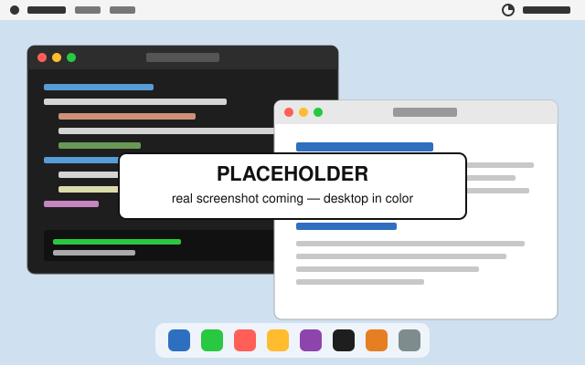
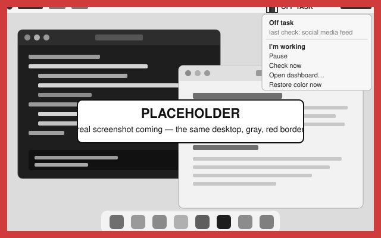

Your Mac goes gray until you get back to work.
Grayout looks at your screen every 45 seconds and asks Claude (or GPT) one question: is this person clearly not working? Two yeses in a row and every display loses its color. It comes back the moment you do.
macOS 13 (Ventura) or later. Free and open source. Uses your own Anthropic or OpenAI API key. Not yet notarized — first launch takes three extra clicks, shown below.
Not sure which one? Apple menu > About This Mac. “Chip: Apple M…” means Apple Silicon.


It doesn’t block. It notices.
It reads context instead of lists. A lecture on YouTube is work. A feed on YouTube is not. The model looks at the whole screen and judges what is actually happening, so there is nothing to configure: no blocklists, no allowed hours, no exceptions to maintain. You can describe your work in one sentence if you want to, and that is optional.
It looks at every display, and at the webcam if you turn that on. A second monitor is not a hiding place, and neither is a phone in your hand.
The consequence is one you cannot ignore and cannot lose work to. Nothing closes, nothing locks, nothing gets typed for you. Your whole Mac turns gray with a red border, and color returns when you return. It takes two high-confidence flags in a row before anything happens, and clicking I’m working in the menu bar backs it off for ten minutes.
What it flags and what it never flags
Both lists are lifted from the prompt, which is public and short.
Flags
- Social media feeds
- Entertainment video
- Games
- Shopping and sports scores
- Chat that is plainly social
- A phone in your hand with nothing being worked on on screen
Never flags
- Editors, terminals, notebooks
- Documents, spreadsheets, slides
- Email and calendars
- GitHub, documentation, papers
- Technical video and lectures
- Search, settings, installers
- Video calls and screen shares
- An empty desk
- Anything ambiguous
A single flag costs you nothing. The prompt tells the model that a false alarm is expensive and a miss is cheap, anything it cannot read is work, and Grayout acts only on two high-confidence flags in a row.
What leaves your Mac
What is sent. A resized screenshot of each display, an optional webcam frame if you turned the camera on, your one-line work description, and the titles of your tasks if you configured a Canvas token or a tasks file. All of it goes from your Mac to api.anthropic.com or api.openai.com, under your own key, whichever key you entered. Nothing goes to us.
What is not. Nothing goes to us. There is no account, no server, and no analytics. Screenshots are deleted from your Mac right after every check, and the webcam frame is never written to disk. The only thing that stays is a 30-day log of short verdict phrases such as “code editor and terminal”, in ~/Library/Application Support/Grayout, which you can delete from Settings.
How each provider treats what it receives is set by its own terms, not by us: see Anthropic’s commercial terms or OpenAI’s API data usage policy. Grayout sends OpenAI requests with store: false, so responses are not kept in your OpenAI account’s stored responses; what OpenAI does beyond that is set out in their policy. The exact request Grayout builds is in src/analyzer.js. More on the privacy page.
It keeps the receipts
Every check is written down: what it saw, whether it fired, and what it cost. If it ever grays you out for something that was work, click Wrong call? — that logs the dispute and backs it off for ten minutes.

What it costs
The app is free. Your provider bills you for the checks. With an Anthropic key and Claude Haiku 4.5 it is about a quarter of a cent each: at the default 45-second setting that is typically about $0.90 per working day, around $20 a month. Thirty seconds is about $1.35 a day; ninety seconds about $0.45. The dashboard shows what you have spent today.
With an OpenAI key and gpt-5-mini it is about a fifteenth of a cent per check: roughly $0.26 per working day at the default setting, around $6 a month. Both need a small prepaid balance to make a key ($5 is the minimum at either). Get a key in two minutes.
Prices as of 2026-09-21, for one display on Claude Haiku 4.5 or gpt-5-mini. The webcam adds about 15%; a second display roughly doubles it.
Install
- Download the DMG above and drag Grayout to your Applications folder.
- Open it. macOS says Apple could not verify “Grayout” is free of malware. Click Done, then go to System Settings > Privacy & Security and click Open Anyway. Or skip the dialog from Terminal:
xattr -dr com.apple.quarantine /Applications/Grayout.app - Allow Screen Recording when the welcome window asks, then click Relaunch Grayout.
- Paste your Anthropic or OpenAI key and click Test key.
- Click Start watching. The first check runs within seconds.
Grayout is a one-person open-source project and is not yet in Apple’s notarization program, so macOS warns you once. The source is public; you can also build it yourself.
The full walk-through, with the exact dialog wording for macOS 26, verifying your download, updating, and what to do if your screen is stuck gray.
Built by one person, on himself
I’m Aarush Kandukoori, a CS student at Carnegie Mellon. Blockers kept getting turned off, so I built this in August 2026 and ran it every workday for six weeks, 12,650 checks, before letting anyone else download it. It flagged me about 3% of the time.
Two studies are worth knowing about. A 22-person field study of an LLM that judges screen activity against a stated intention (arXiv 2510.14513) found less time on intention-irrelevant activity than rule-based reminders or passive logging. A 161-student trial of phone grayscale (Holte and Ferraro, 2020) cut daily screen time by about 38 minutes. Neither studied Grayout.
Not for employers
Grayout reports to nobody but you. There is no team dashboard and there never will be an employer edition. If a workplace installs this on your machine, that is not what it is for.
Questions
My Mac is stuck gray.
Click Restore color now in the Grayout menu bar item; it works in every state, including paused. If the menu bar item is gone, relaunch Grayout, which turns grayscale off before it does anything else. Without Grayout at all, paste this in Terminal: "/Applications/Grayout.app/Contents/Resources/helper/grayscale" off. Without Terminal: System Settings > Accessibility > Display > Color Filters, turn it on, then off. And a watchdog restores color after 20 minutes no matter what.
Can I just quit it?
Yes, always. Quit is one click in the menu bar and restores color on the way out. It is for adults.
What if it’s wrong?
Click I’m working in the menu bar. Color comes back, it backs off for ten minutes, and the dispute is logged. If you want it fixed, report it with the verdict line from the dashboard’s Copy button; that line is a short category phrase, never a screenshot.
Two monitors?
Yes. Every display is checked and every display goes gray. If any display shows real work, nothing happens.
Zoom?
Video-call apps never trigger it. Zoom, FaceTime, Teams, Webex, Meet and Discord are allowed by default, and the prompt treats any call or screen share as work. Edit the list in Settings.
Which is better, Anthropic or OpenAI?
The author’s six-week run was on Anthropic’s Haiku 4.5, so that is the one with real mileage. OpenAI’s gpt-5-mini was checked on 2026-09-21: it returns the same verdict format and costs about four times less, but it has not yet been run for weeks on a real desk. Grayout tells the two apart from the key, so there is nothing to configure.
Intel Macs?
Yes, there is a separate download above. Both builds need macOS 13 (Ventura) or later.
Why not the App Store?
Grayout turns the screen gray through a private display API, and it is not notarized yet. Neither passes review.
Will an update ask for Screen Recording again?
It might. macOS sometimes keeps the toggle on but returns blank captures after an update. The Permissions menu shows the status and explains the fix: turn Grayout off and on in the Screen Recording list, or use Copy the fix command and paste it in Terminal.
Uninstall?
Quit Grayout, drag it from Applications to the Trash, delete ~/Library/Application Support/Grayout, and turn off the login item in System Settings > General > Login Items. Revoke the key at console.anthropic.com or platform.openai.com if you no longer need it.